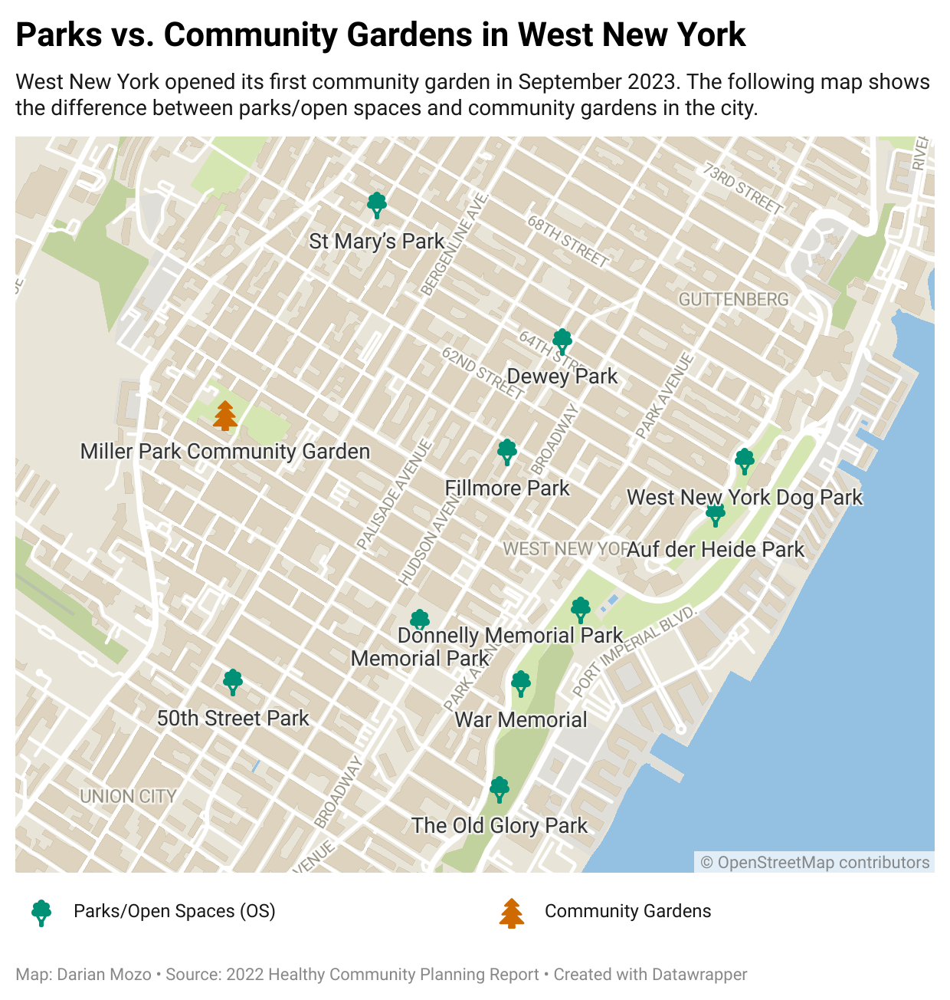

New community garden promotes the union between residents and the environments
It's been a month since the community garden at Miller Park in West New York - the first of its kind in this New Jersey city - opened its doors to the public after a two-year wait. But neighbors' excitement has turned to doubts about the project's future: Will the plants survive the winter? How to care for them from insect pests and other animals? Questions are piling up and answers are scarce.

The garden was an initiative of the West New York City Council to promote the importance of caring for nature and thus "create a sense of togetherness among residents," said Rosemarie Suarez, assistant city manager and sustainability coordinator for the community garden.
Its design consists of 40 plots, including four wheelchair-accessible plots. The garden is free for residents, while non-residents must pay $30 after receiving their space.
Suarez spearheaded the project, the creation of which he has been passionate about since its inception. "I have always harbored a desire to contribute to initiatives that would improve and educate our community," he commented.
For many neighbors, the garden represents the only possibility to have contact with nature in a highly populated city.
Felicity Torres, a real estate agent with Sky Realty, was one of the first people to apply for and obtain a plot in the community garden. This is her first time planting her own food in such a garden and her experience has been positive and full of learning.

For Torres, 23, this project deserves to be advertised so that more residents know about it.
"[The garden] is a very rare feature [in West New York], accessible to everyone, so it should get noticed," Torres recommended. "It's a beautiful thing to learn about."
According to West New York municipal data from 2022, most housing is more than 1.5 miles from open space: about 60% of the population does not have easy access to green space.
New Jersey is considered the most densely populated state in the nation, and its population and city crowding continues to grow ever larger.
According to the latest July 2022 Census report, West New York has about 52,000 residents living in the city, ranking 37th among the state's most populous municipalities.
In contrast, so far there are only seven public green spaces, so creating more green spaces means a big step forward in the community.
So far, the creation of the park and garden has marked a before and after in the city and for several neighbors the change was noticeable.
Alejandro Falto, a security guard at Miller Park and a resident of the city for nearly 40 years, saw tremendous progress in the city in recent times thanks to the opening of the park and all its features.
"The city has progressed over time," Falto explained. "This park is a remarkable thing because for [this area] it didn't exist."
Many other residents who pass by the park and garden often look interested and give the garden a thumbs up for different reasons.
Kerry Hernandez, a paraprofessional in West New York, believes the plants serve as therapy to calm nerves in times of stress.
For Torres, 23, this project deserves to be advertised so that more residents inside and outside the area know about it.
"[The garden]is a very rare feature [in West New York], accessible to everyone, so it should get noticed," Torres recommended. "It's a beautiful activity to learn from."
According to 2022 West New York municipal data, most housing is more than 1.5 miles from open space: about 60% of the population does not have easy access to green space.
New Jersey is considered the most densely populated state in the nation, and its population and city crowding continues to grow ever larger.
According to the latest July 2022 Census report, West New York has about 52,000 residents living in the city, ranking 37th among the state's most populous municipalities.
In contrast, so far there are only seven public green spaces, so creating more green spaces means a breakthrough in the community.
So far, the creation of the park and garden has marked a before and after in the city and for several neighbors the change was noticeable.
Alejandro Falto, a security guard at Miller Park and a resident of the city for nearly 40 years, saw tremendous progress in the city in recent times thanks to the opening of the park and all its features.
"The city has progressed over time," Falto explained. "This park is a remarkable thing because for [this area] it didn't exist."
Many other residents who pass by the park and garden often look interested and give the garden a thumbs up for different reasons.

Kerry Hernandez, a paraprofessional in West New York, believes the plants serve as therapy to calm nerves in times of stress.
According to Claudia Holguín, a mother, the creation of this garden would especially benefit children and the elderly by giving them the opportunity to learn and enjoy an environmentally beneficial activity.
Despite the great initiative, there are still several questions and concerns about the facilities and safety of the garden that neighbors are worried about.
One common concern is how the garden will be cared for during the winter. "Now the weather is getting colder and there are no plants to withstand [the temperatures]," said Falto, "planting now would mean losing the crop."
"When winter comes all those plants are going to die," Hernandez also commented with some concern.
In Torres' case, one of his concerns is the security of the orchard, since although there are security guards watching the area, it does not have the security it should have, such as a security padlock.
Pests, especially Lanternflies - the spotted lanternfly in Spanish - pose a great danger to the quality of life of the plants. For Torres, it is vital to take care of the plants from these and other pests if we want to give proper care to the orchard.
The municipality was asked about the aforementioned doubts and concerns, but no response was received.
Collaboration with local environmental groups and educational programs in Hudson County is ongoing through the rest of the fall. In the future, Suaréz, the project manager, hopes that more community gardens can be opened, particularly in the Boulevard East area.